[ Verified credit ]
SPARK
Pay once. Unlock credit.
Pay a deposit on Sepolia. Attestcoin verifies it on-chain. A credit line unlocks on Creditcoin. No credit check, no paperwork, no bank.
DeFi Track · BUIDL CTC 2026 Fall · Attestcoin Protocol
Problem
Credit needs facts that live on another chain. Today that means trust.
Under-collateralised lending is the growth edge of on-chain credit. Its bottleneck is not capital — it is assessment.
- Assessment today is off-chain: delegates and auditors decide, and enforcement runs through legal process
- When the deciding fact lives on another chain, the options are an oracle (a trusted party) or a bridge (a repeated point of failure)
- Self-reported history is worthless: a borrower can open and repay their own loan 100 times to manufacture a perfect score
Who this is for
The borrower with a proven position and no way to use it
A DeFi borrower who holds a verifiable position on Ethereum mainnet and needs liquidity on Creditcoin — without selling the position or bridging it.
- Their facts already exist on-chain, verifiably. No bureau, no paperwork, no identity attestation
- The alternative today is specific and bad: realise the gain, or accept bridge risk
- Measured, not asserted: 8/8 real wallets rebuilt within 10 bps of the live balance
- Portable attested standing: a repaid line becomes proven history that follows the borrower across products and chains — not a score locked inside one app
The unbanked borrower is the destination this reaches. The deposit-free path that gets there is built and covered by 21 tests.
Why now
Assessment today is a trusted opinion. It can be a verified fact.
- Private credit is a $1.7T market moving on-chain, and it works today by trusting humans to assess risk off-chain
- Maple and Goldfinch assess through off-chain delegates and auditors, and enforce through legal process
- When the deciding fact lives on another chain the choice is an oracle (trust) or a bridge (risk). Attestcoin removes the fork by proving the source chain's own record
- Dual proofs verify the payment and the current balance — a balance cannot be farmed, self-dealt, or bought
- Who pays: 10% APR on drawn credit, accruing on-chain — and no delegate is needed to underwrite the line
Solution
Your on-chain payment history is your credit score
Spark uses the Attestcoin Protocol to prove Sepolia payments on Creditcoin. Verified payment history builds a trustless credit score. No bank forms, no oracle, no paperwork.
- Pay deposit on Sepolia → dual Attestcoin proofs → credit opens on Creditcoin
- On-chain credit score: 650 base + 40 per attested payment (cap 850)
- LTV bonus from payment history (+2.5% at 1+, +5% at 3+ payments)
- No valid proof = no state change. Cryptographic guarantees only.
How it works
Four steps. Fully on-chain.
01
Pay deposit + attest balance on Sepolia
02
Attestcoin proves both txs via BlockProver
03
CreditLine opens on Creditcoin (LTV tier set by attested balance)
04
Repay on Sepolia → verify → line closes
Optional: link past Sepolia payments to raise credit score and LTV bonus before opening.
Attestcoin Protocol
15 Attestcoin surfaces load-bearing, with strict receipt verification
openCredit requires two BlockProver proofs: deposit + balance- Strict receipt log decoding: topic, payer, and amount verified from proven data
- One-time
txHash (replay protected)
- Payer must match
msg.sender
- Credit = deposit × LTV; attested balance sets the tier (80% / 85% / 90%)
- Payment history adds LTV bonus (+250 / +500 bps)
| Component | Role |
|---|
| SepoliaPayment | Deposit, repay, balance events |
| Attestcoin / USC | Cross-chain proof (dual) |
| CreditLine | Credit + score + history + interest |
| BlockProver 0x0FD2 | On-chain verify |
15 surfaces across 3 attested event kinds: 10 on the critical path, 5 more integrated and tested. Verifier parses receipt RLP from the proven encodedTransaction; a decoded amount that disagrees with the claim reverts. Per Aug 18 AMA: "Transaction fields and their log data are verified and available."
Measured, not asserted
A position on another chain, rebuilt from proven facts
Credit sizing needs history elsewhere and proof of cover. We rebuilt real Aave V3 positions from mainnet data.
8/8
Real wallets, within
10 bps of live balance
0.51
Largest residual, bps
from rebasing interest
66.8%
Error in event-summing
a position, measured
417
Contract tests
0 failures
- Aave events overstate a real position by 66.8%: aTokens move without emitting an event
- So the engine reads the Transfer ledger, anchored where balance is provably zero
- Interest is never invented: positions advance only against an attested state balance
- And it sizes credit: $217,276 against $1,086,382 of proven net worth, at a 20% policy LTV
Traction
Two full closed loops on-chain with real USC proofs
2
Full closed loops
Open → Withdraw → Redeem → Repay → Close
6
Attested payments
on-chain credit history
850
Credit score
(max possible)
95%
LTV achieved
(base 90% + 5% history)
All proofs are real Attestcoin USC proofs verified by BlockProver. On-chain demo wallet: 0x7A35f63F81357DaDE2cff8f5699b935786Aa9Da2.
Live at spark.sithunyein.com · Contracts verified on Blockscout
Product
Live testnet product, not a slideware demo
| Contract | Network |
|---|
| SepoliaPayment | Sepolia |
| AttestcoinPaymentVerifier | Creditcoin testnet |
| CreditLine + SparkCredit | Creditcoin testnet |
Testnet only. Not audited. MIT License.
The Ask
$10K to ship credit for the real world
- Now: Dual Attestcoin proofs, strict log decoding, credit score and history LTV bonus, live on testnet. 417 tests
- Built, not deployed: credit limits sized from a proven position on another chain, not just payment count
- With $10K: Broadcast the position engine, external review of the strict verifier, faster attestation UX
- CEIP fast-track: Funded credit book, distribution where borrowers already are, mainnet readiness
Spark turns verified facts into creditworthiness. No bank. No oracle. No delegate. The first borrower is the one with a proven position; the path that reaches everyone else is built, tested, and one deploy away.
MIT License · Sithu Nyein · spark.sithunyein.com